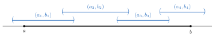

Chapter 14. Lebesgue Measure
Chapter 13 described measures in general. This chapter builds the one that matters most for analysis. Lebesgue measure gives every interval its length, it does not change when a set is translated, and it is a measure on a \(\sigma\)-algebra that contains every Borel set.
The construction has two steps. First, Section 14.1 defines the outer measure \(m^*(A)\) of every set \(A\subset\mathbb{R}\), by covering \(A\) with countably many open intervals as efficiently as possible. This is the idea behind sets of measure zero in Definition 9.2.5. Outer measure is defined for every set, but it is not additive. Second, Section 14.2 uses a condition due to Carathéodory to pick out the measurable sets, the ones that split every other set additively. They form a \(\sigma\)-algebra, and on it \(m^*\) is a measure. Section 14.3 shows every measurable set is a Borel set up to a set of measure zero. Section 14.4, which is marked with a star, shows that some sets are not measurable.
What this chapter uses from earlier chapters. The Heine–Borel Theorem (Theorem 4.2.14), countable unions of countable sets (Theorem 2.2.6), sets of measure zero (Definition 9.2.5), and from Chapter 13, Theorem 13.1.4, Theorem 13.2.5 and the Good Sets Principle.
14.1 Outer Measure
Remark 14.1.1. It seems like a properly defined measure \(m\) on \((\mathbb{R},\mathcal{M})\) should have the following properties.
\(\mathcal{M}=\mathcal{P}(\mathbb{R})\).
\(m\) is a measure.
For an interval \(I\), \(m(I)=\ell(I)\), where \(\ell(I)\) is the length of \(I\).
\(m\) is translation invariant; i.e. if \(E+y=\{x+y:x\in E\}\), \(m(E+y)=m(E)\).
However, in order for (2), (3), and (4) to be true, there will be certain sets \(P\in\mathcal{P}(\mathbb{R})\) that will not be measurable. The set of measurable sets will end up containing \(\mathcal{B}_\mathbb{R}\). (See Theorem 14.4.6. The measurable sets form a \(\sigma\)-algebra strictly larger than \(\mathcal{B}_\mathbb{R}\), as Remark 14.3.2 explains.)
Definition 14.1.2. For an interval \(I\) with endpoints \(a\le b\), the length of \(I\) is \(\ell(I)=b-a\). An unbounded interval has length \(\infty\). Let \(A\subset\mathbb{R}\) and consider all countable collections \(\{I_n\}\) of open intervals with \(A\subset\bigcup_nI_n\). Define the outer measure of \(A\), \(m^*(A)\), to be \[m^*(A)=\inf_{A\subset\bigcup I_n}\sum \ell(I_n).\]
The infimum is over a nonempty set, since the intervals \((-n,n)\) cover every set. Its value may be \(\infty\). A set \(E\) has measure zero in the sense of Definition 9.2.5 exactly when \(m^*(E)=0\). Indeed, both say that for every \(\varepsilon>0\) there is a countable cover of \(E\) by open intervals with total length less than \(\varepsilon\).
Lemma 14.1.3. If \(A\subset B\), \(m^*(A)\le m^*(B)\).
Proof. See Exercise 14.1.1.
∎
Theorem 14.1.4. The outer measure of an interval is its length.
Proof.
Closed bounded intervals. Let \(a\le b\). For \(\varepsilon>0\), the single interval \((a-\varepsilon,b+\varepsilon)\) covers \([a,b]\). So \(m^*([a,b])\le b-a+2\varepsilon\) for every \(\varepsilon>0\), and \(m^*([a,b])\le b-a\).
For the reverse inequality, let \(\{I_n\}\) be a countable collection of open intervals covering \([a,b]\). It is enough to show \(\sum\ell(I_n)\ge b-a\). If some \(I_n\) is unbounded, the sum is \(\infty\). So assume each \(I_n\) is bounded. By the Heine–Borel Theorem, finitely many of them cover \([a,b]\). Choose a chain from this finite list as follows. See Figure 14.1. Let \((a_1,b_1)\) be one of them that contains \(a\). If \(b_1>b\), stop. Otherwise \(b_1\in[a,b]\), and \(b_1\notin(a_1,b_1)\), so another interval \((a_2,b_2)\) in the list contains \(b_1\). Then \(a_2<b_1<b_2\). If \(b_2>b\), stop. Otherwise continue in the same way. The right endpoints \(b_1<b_2<\cdots\) increase, so no interval is chosen twice. Since the list is finite, the process stops, with an interval \((a_k,b_k)\) such that \(b_k>b\). Since \(a_{i+1}<b_i\) for each \(i\), \[\sum_{i=1}^k(b_i-a_i)=(b_k-a_1)+\sum_{i=1}^{k-1}(b_i-a_{i+1})>b_k-a_1>b-a.\] The chosen intervals are distinct members of \(\{I_n\}\), so \(\sum\ell(I_n)\ge\sum_{i=1}^k(b_i-a_i)>b-a\). Taking the infimum over all covers, \(m^*([a,b])\ge b-a\).
Other bounded intervals. Let \(I\) be a bounded interval with endpoints \(a<b\). Then \(I\subset[a,b]\), so \(m^*(I)\le b-a\) by Lemma 14.1.3. For \(0<\varepsilon<\frac{b-a}{2}\), the closed interval \([a+\varepsilon,b-\varepsilon]\) is contained in \(I\), so \(m^*(I)\ge b-a-2\varepsilon\). So \(m^*(I)=b-a=\ell(I)\).
Unbounded intervals. If \(I\) is unbounded, then for every \(M>0\) it contains a closed interval \(J\) with \(\ell(J)=M\). So \(m^*(I)\ge m^*(J)=M\) for every \(M>0\), and \(m^*(I)=\infty=\ell(I)\).
∎

Theorem 14.1.5. \(m^*\) is translation invariant. That is, \(m^*(A+y)=m^*(A)\) for all \(A\subset\mathbb{R}\) and \(y\in\mathbb{R}\).
Proof. See Exercise 14.1.2.
∎
Theorem 14.1.6. Let \(\{A_n\}\) be a countable collection of sets of real numbers. Then \[m^*\left(\bigcup_{n\in\mathbb{N}}A_n\right)\le \sum_{n\in\mathbb{N}}m^*(A_n).\]
Proof.
If \(\sum m^*(A_n)=\infty\), there is nothing to prove. So assume each \(m^*(A_n)\) is finite. Let \(\varepsilon>0\). For each \(n\), the definition of \(m^*(A_n)\) as an infimum gives a countable collection \(\{I_{n,i}\}_{i\in\mathbb{N}}\) of open intervals that covers \(A_n\) with \[\sum_{i\in\mathbb{N}}\ell(I_{n,i})<m^*(A_n)+\frac{\varepsilon}{2^n}.\] The collection of all the intervals \(I_{n,i}\) is countable, as a countable union of countable collections (Theorem 2.2.6). It covers \(\bigcup_nA_n\). List it as one sequence \(J_1,J_2,\dots\). Any partial sum \(\sum_{k=1}^K\ell(J_k)\) uses finitely many intervals \(I_{n,i}\), all with \(n\le N\) for some \(N\). Since the lengths are nonnegative, \[\sum_{k=1}^K\ell(J_k)\le\sum_{n=1}^N\sum_{i\in\mathbb{N}}\ell(I_{n,i})<\sum_{n=1}^N\left(m^*(A_n)+\frac{\varepsilon}{2^n}\right)<\sum_{n\in\mathbb{N}}m^*(A_n)+\varepsilon.\] So \(\sum_k\ell(J_k)\le\sum_nm^*(A_n)+\varepsilon\), and therefore \(m^*\left(\bigcup_nA_n\right)\le\sum_nm^*(A_n)+\varepsilon\). Since \(\varepsilon>0\) was arbitrary, the result follows.
∎
Proof Technique (Splitting \(\varepsilon\) Over Countably Many Steps).
The proof of Theorem 14.1.6 makes countably many choices, one for each \(A_n\), and each choice costs a small error. If every error were \(\varepsilon\), the total error would be infinite. So the \(n\)th choice is allowed an error of only \(\frac{\varepsilon}{2^n}\). Since \(\sum_{n=1}^\infty\frac{1}{2^n}=1\), the total error is at most \(\varepsilon\). This is the countable version of Splitting \(\varepsilon\) from Chapter 3. Example 9.2.7 used the same idea. Any convergent series of positive terms with sum \(1\) would do, but \(\frac{1}{2^n}\) is the usual choice.
Corollary 14.1.7. If \(A\) is countable, \(m^*(A)=0\).
Proof. Enumerate the elements of \(A\), say \(A=\{x_1,x_2,\dots\}\). Let \(A_n=\{x_n\}\) for \(n\in\mathbb{N}\). So \[m^*(A)\le m^*\left(\bigcup_{n\in\mathbb{N}}A_n\right)\le\sum_{n\in\mathbb{N}} m^*(A_n)=0.\] Here \(m^*(\{x_n\})=m^*([x_n,x_n])=0\) by Theorem 14.1.4. A finite set is handled the same way.
∎
Example 14.1.8. The set \([0,1]\) is not countable. This gives a second proof of Theorem 2.3.2.
Proof. \(m^*([0,1])=1\ne0\). Thus \([0,1]\) is not countable.
∎
Example 14.1.9. Let \(A=\mathbb{Q}\cap[0,1]\). Let \(\{I_n\}\) be a finite collection of open intervals covering \(A\). Then \(\sum \ell(I_n)\ge 1\). However, \(m^*(A)=0\). So countable covers, not just finite ones, are essential in Definition 14.1.2.
Proof. See Exercise 14.1.3.
∎
Theorem 14.1.10. Given any set \(A\), for all \(\varepsilon>0\), there exists an open set \(U\) such that \(A\subset U\) and \(m^*(U)\le m^*(A)+\varepsilon\).
Proof. See Exercise 14.1.4.
∎
Exercises
Exercise 14.1.1. Prove Lemma 14.1.3. That is, prove that if \(A\subset B\), then \(m^*(A)\le m^*(B)\). [Solution]
Exercise 14.1.2. Prove that \(m^*\) is translation invariant. [Solution]
Exercise 14.1.3. Let \(A=\mathbb{Q}\cap[0,1]\). Let \(\{I_n\}\) be a finite collection of open intervals covering \(A\). Prove \(\sum \ell(I_n)\ge 1\).
Exercise 14.1.4. If \(A\subset\mathbb{R}\), prove that for all \(\varepsilon>0\), there exists an open set \(U\) such that \(A\subset U\) and \(m^*(U)\le m^*(A)+\varepsilon\). [Solution]
Exercise 14.1.5. Prove that if \(m^*(A)=0\), then \(m^*(A\cup B)=m^*(B)\).
Exercise 14.1.6. Prove that \(m^*(A)\) does not change if, in Definition 14.1.2, open intervals are replaced by closed intervals. [Hint]
Exercise 14.1.7. For \(c>0\) and \(A\subset\mathbb{R}\), let \(cA=\{cx:x\in A\}\). Prove that \(m^*(cA)=c\,m^*(A)\). [Hint]
14.2 Lebesgue Measurable Sets
Outer measure is defined for every set, but it is not a measure on \(\mathcal{P}(\mathbb{R})\). There are disjoint sets \(A\) and \(B\) with \(m^*(A\cup B)<m^*(A)+m^*(B)\), although they cannot be described explicitly (see Section 14.4). The fix is to keep only the sets \(E\) that split every set \(A\) additively. These are the measurable sets.
Definition 14.2.1. A set \(E\subset\mathbb{R}\) is said to be measurable if for each set \(A\subset\mathbb{R}\), \[m^*(A)=m^*(A\cap E)+m^*(A\cap E^c).\] If \(E\) is measurable, define the Lebesgue measure \(m(E)\) to be the outer measure of \(E\), \(m(E)=m^*(E)\). The collection of measurable sets is denoted \(\mathcal{M}\).
Remark 14.2.2. Since \(A=(A\cap E)\cup(A\cap E^c)\), \(m^*(A)\le m^*(A\cap E)+m^*(A\cap E^c)\) by Theorem 14.1.6. So \(E\) is measurable if for each set \(A\subset\mathbb{R}\), \[m^*(A)\ge m^*(A\cap E)+m^*(A\cap E^c).\] This is automatic when \(m^*(A)=\infty\). So it only needs to be checked for sets \(A\) with \(m^*(A)<\infty\).
Proof Technique (Proving a Set Is Measurable).
To prove \(E\) is measurable, fix an arbitrary “test set” \(A\subset\mathbb{R}\). By Remark 14.2.2, only one inequality is needed, \(m^*(A)\ge m^*(A\cap E)+m^*(A\cap E^c)\), and only for \(m^*(A)<\infty\). Then either use what is known about \(E\) to split \(A\), as in the proofs of Lemma 14.2.5 and Theorem 14.2.8, or go back to a cover of \(A\) by intervals with total length close to \(m^*(A)\) and split the cover, as in the proof of Lemma 14.2.9. The test set \(A\) is arbitrary. It does not have to be measurable, and usually nothing is known about it.
Lemma 14.2.3. If \(m^*(E)=0\), then \(E\) is measurable.
Proof. Let \(A\) be any set. Then \(A\cap E\subset E\) and so \(m^*(A\cap E)\le m^*(E)=0\). Also, \(A\supset A\cap E^c\), and so \[m^*(A)\ge m^*(A\cap E^c)=m^*(A\cap E^c)+m^*(A\cap E).\] Thus \(E\) is measurable.
∎
Lemma 14.2.4. If \(F\subset E\) and \(E\) is measurable with \(m(E)=0\), \(F\) is measurable and \(m(F)=0\).
Proof. Let \(A\) be a set. Since \(E\) is measurable, \[m^*(A)=m^*(A\cap E)+m^*(A\cap E^c).\] Since \(A\cap E\subset E\), \(m^*(A\cap E)=0\). So \(m^*(A\cap E^c)=m^*(A)\). Thus, since \(A\cap F\subset A\cap E\) and \(A\cap F^c\subset A\), \[m^*(A)=m^*(A\cap E)+m^*(A\cap E^c)\ge m^*(A\cap F) + m^*(A)\ge m^*(A\cap F) + m^*(A\cap F^c).\] So \(F\) is measurable. Since \(F\subset E\), \(m(F)\le m(E)\) and so \(m(F)=0\). (A shorter proof. By Lemma 14.1.3, \(m^*(F)\le m^*(E)=0\), so \(F\) is measurable by Lemma 14.2.3.)
∎
Lemma 14.2.5. If \(E_1\) and \(E_2\) are measurable, \(E_1\cup E_2\) is measurable.
Proof.
Let \(A\subset\mathbb{R}\). Split \(A\) with \(E_1\), and then split the part of \(A\) outside \(E_1\) with \(E_2\). Since \(E_1\) is measurable, \[m^*(A)=m^*(A\cap E_1)+m^*(A\cap E_1^c).\] Since \(E_2\) is measurable, using the test set \(A\cap E_1^c\), \[m^*(A\cap E_1^c)=m^*(A\cap E_1^c\cap E_2)+m^*(A\cap E_1^c\cap E_2^c).\] By De Morgan’s Laws, \(E_1^c\cap E_2^c=(E_1\cup E_2)^c\). Also \(A\cap(E_1\cup E_2)=(A\cap E_1)\cup(A\cap E_1^c\cap E_2)\), so by subadditivity, \[m^*(A\cap(E_1\cup E_2))\le m^*(A\cap E_1)+m^*(A\cap E_1^c\cap E_2).\] Putting these together, \[\begin{aligned} m^*(A)&=m^*(A\cap E_1)+m^*(A\cap E_1^c\cap E_2)+m^*(A\cap(E_1\cup E_2)^c)\\ &\ge m^*(A\cap(E_1\cup E_2))+m^*(A\cap(E_1\cup E_2)^c). \end{aligned}\] So \(E_1\cup E_2\) is measurable.
∎
Corollary 14.2.6. The family \(\mathcal{M}\) of measurable sets of real numbers forms an algebra.
Proof. Using Lemma 14.2.5 and an induction argument shows that if \(E_1,\dots,E_n\) are measurable, then \(\bigcup_{i=1}^n E_i\) is measurable. Also, if \(E\) is measurable, then for any set \(A\), \[m^*(A)=m^*(A\cap E)+m^*(A\cap E^c)=m^*(A\cap E^c)+m^*(A\cap (E^c)^c).\] So \(E^c\) is measurable and \(\mathcal{M}\) is an algebra. It is nonempty, since \(\emptyset\) is measurable by Lemma 14.2.3.
∎
Lemma 14.2.7. Let \(A\) be any set and let \(E_1,\dots,E_n\) be a finite sequence of disjoint measurable sets. Then \[m^*\left(A\cap\left[\bigcup_{i=1}^nE_i\right]\right)=\sum_{i=1}^n m^*(A\cap E_i).\]
Proof.
Induct on \(n\). For \(n=1\) there is nothing to prove. Suppose the statement holds for \(n=k\), and let \(B=A\cap\bigcup_{i=1}^{k+1}E_i\). Test \(B\) with the measurable set \(E_{k+1}\). Since the sets \(E_i\) are disjoint, \(B\cap E_{k+1}=A\cap E_{k+1}\) and \(B\cap E_{k+1}^c=A\cap\bigcup_{i=1}^kE_i\). So \[m^*(B)=m^*(A\cap E_{k+1})+m^*\left(A\cap\bigcup_{i=1}^kE_i\right)=m^*(A\cap E_{k+1})+\sum_{i=1}^km^*(A\cap E_i),\] using the case \(n=k\). This is the case \(n=k+1\).
∎
Theorem 14.2.8. The collection \(\mathcal{M}\) of measurable subsets of \(\mathbb{R}\) is a \(\sigma\)-algebra.
Proof.
By Corollary 14.2.6, \(\mathcal{M}\) is an algebra. By Theorem 13.1.4, it is enough to show that the union \(E=\bigcup_{i=1}^\infty E_i\) of a sequence of pairwise disjoint measurable sets is measurable. Let \(A\subset\mathbb{R}\), and let \(F_n=\bigcup_{i=1}^nE_i\). Then \(F_n\in\mathcal{M}\) and \(E^c\subset F_n^c\). Testing \(A\) with \(F_n\) and using Lemma 14.2.7, \[m^*(A)=m^*(A\cap F_n)+m^*(A\cap F_n^c)\ge\sum_{i=1}^nm^*(A\cap E_i)+m^*(A\cap E^c).\] This holds for every \(n\in\mathbb{N}\). Letting \(n\to\infty\) and then using subadditivity on \(A\cap E=\bigcup_i(A\cap E_i)\), \[m^*(A)\ge\sum_{i=1}^\infty m^*(A\cap E_i)+m^*(A\cap E^c)\ge m^*(A\cap E)+m^*(A\cap E^c). \tag{14.2.1}\] So \(E\in\mathcal{M}\).
∎
Lemma 14.2.9. The interval \((a,\infty)\) is measurable.
Proof.
Let \(A\subset\mathbb{R}\) with \(m^*(A)<\infty\). Let \(A_1=A\cap(a,\infty)\) and \(A_2=A\cap(-\infty,a]\). Let \(\varepsilon>0\), and choose a countable collection \(\{I_n\}\) of open intervals covering \(A\) with \(\sum\ell(I_n)<m^*(A)+\varepsilon\). Cut each interval at \(a\). Let \(I_n'=I_n\cap(a,\infty)\) and \(I_n''=I_n\cap(-\infty,a]\). Each is an interval or empty, and \(\ell(I_n)=\ell(I_n')+\ell(I_n'')\). The sets \(I_n'\) cover \(A_1\) and the sets \(I_n''\) cover \(A_2\). They need not be open, but by Lemma 14.1.3 and Theorems 14.1.6 and 14.1.4, \[m^*(A_1)\le\sum m^*(I_n')=\sum\ell(I_n')\quad\text{and}\quad m^*(A_2)\le\sum\ell(I_n'').\] Adding, \[m^*(A\cap(a,\infty))+m^*(A\cap(a,\infty)^c)\le\sum\left(\ell(I_n')+\ell(I_n'')\right)=\sum\ell(I_n)<m^*(A)+\varepsilon.\] Since \(\varepsilon>0\) was arbitrary, \((a,\infty)\) is measurable, by Remark 14.2.2.
∎
Theorem 14.2.10. Every Borel set is measurable.
Proof. By Theorem 13.2.5 (4), \(\mathcal{B}_\mathbb{R}\) is generated by \(\{(a,\infty):a\in\mathbb{R}\}\). Since, by Lemma 14.2.9, \((a,\infty)\in\mathcal{M}\) and \(\mathcal{M}\) is a \(\sigma\)-algebra, \(\mathcal{B}_\mathbb{R}\subset\mathcal{M}\) by Lemma 13.1.11.
∎
In particular, open sets, closed sets, \(G_\delta\) sets and \(F_\sigma\) sets are measurable, and so is every interval. By Theorem 14.1.4, \(m(I)=\ell(I)\) for every interval \(I\).
Theorem 14.2.11. If \(E\) is a measurable set, then \(E+y\) is measurable and \(m(E+y)=m(E)\).
Proof. This is a direct result of Theorem 14.1.5. Let \(A\subset\mathbb{R}\). Then \((A-y)\cap E=(A\cap(E+y))-y\), and similarly for complements. Since \(E\) is measurable and \(m^*\) is translation invariant, \[m^*(A)=m^*(A-y)=m^*((A-y)\cap E)+m^*((A-y)\cap E^c)=m^*(A\cap(E+y))+m^*(A\cap(E+y)^c).\] So \(E+y\) is measurable, and \(m(E+y)=m^*(E+y)=m^*(E)=m(E)\).
∎
Theorem 14.2.12. Let \(\mathcal{M}\) be the collection of measurable subsets of \(\mathbb{R}\). \((\mathbb{R},\mathcal{M},m)\) is a measure space.
Proof. First, note that since \(\emptyset\) is countable, by Corollary 14.1.7, \(m(\emptyset)=0\). Now, let \(\{E_i\}_{i=1}^\infty\) be a disjoint sequence of measurable sets, and let \(E=\bigcup_iE_i\). Taking \(A=E\) in (14.2.1) gives \(m(E)\ge\sum_{i=1}^\infty m(E_i)\). The reverse inequality is subadditivity. So \[m\left(\bigcup_{i=1}^\infty E_i\right)=\sum^\infty_{i=1}m(E_i).\] So \(m\) is a measure and \((\mathbb{R},\mathcal{M},m)\) is a measure space.
∎
So Lebesgue measure has properties (2), (3) and (4) of Remark 14.1.1, on the \(\sigma\)-algebra \(\mathcal{M}\). Every result of Section 13.3 applies to it. For example, \(m\) is continuous from below, and from above on sets of finite measure.
Exercises
Exercise 14.2.1. Prove that every countable set is measurable with measure \(0\). Prove that \(\mathbb{R}\setminus\mathbb{Q}\) is measurable, and find \(m\bigl([0,1]\setminus\mathbb{Q}\bigr)\). [Hint]
Exercise 14.2.2. Let \(E\) be measurable and let \(F\subset\mathbb{R}\) with \(m^*(E\setminus F)=m^*(F\setminus E)=0\). Prove that \(F\) is measurable and \(m(F)=m(E)\). [Hint]
Exercise 14.2.3. Prove that if \(E_1\) and \(E_2\) are measurable, then \(m(E_1\cup E_2)+m(E_1\cap E_2)=m(E_1)+m(E_2)\). (Compare Exercise 13.3.3.)
Exercise 14.2.4. Let \(E\) be measurable and let \(A\subset\mathbb{R}\). Prove that \(m^*(A\cup E)+m^*(A\cap E)=m^*(A)+m(E)\). [Hint]
Exercise 14.2.5. Let \(E\) be measurable with \(m(E)>0\). Prove that \(E\) is uncountable. [Hint]
14.3 Approximation by Open and Closed Sets
Measurable sets can be very complicated. The next theorem says they are never far from simple sets. Every measurable set lies between an \(F_\sigma\) set and a \(G_\delta\) set that differ by a set of measure zero. When \(m(E)<\infty\), \(E\) is even close to a finite union of intervals.
Theorem 14.3.1. Let \(E\subset\mathbb{R}\). The following are equivalent.
\(E\) is measurable.
For all \(\varepsilon>0\), there exists an open set \(U\supset E\) such that \(m^*(U\setminus E)<\varepsilon\).
For all \(\varepsilon>0\), there exists a closed set \(F\subset E\) such that \(m^*(E\setminus F)<\varepsilon\).
There exists a \(G_\delta\) set \(G\supset E\) such that \(m^*(G\setminus E)=0\).
There exists an \(F_\sigma\) set \(F\subset E\) such that \(m^*(E\setminus F)=0\).
If \(m^*(E)<\infty\), the above are equivalent to:
for all \(\varepsilon>0\), there exists a finite union \(O\) of open intervals such that \(m^*(O\triangle E)<\varepsilon\), where \(O\triangle E=(O\setminus E)\cup(E\setminus O)\).
Remark 14.3.2. By (4), every measurable set is a Borel set with a set of measure zero removed. So \(\mathcal{M}\) is the \(\sigma\)-algebra generated by \(\mathcal{B}_\mathbb{R}\) together with the sets of measure zero. There are measurable sets that are not Borel sets. Every subset of the Cantor set is measurable with measure \(0\), by Example 9.2.8 and Lemma 14.2.3. A counting argument from set theory shows there are more subsets of the Cantor set than there are Borel sets, so some of them are not Borel sets. That argument is beyond this book. Exercise 17.6.3 gives a different argument, using the Cantor function.
Exercises
Exercise 14.3.1. Prove that (1)–(5) in Theorem 14.3.1 are equivalent. [Hint]
Exercise 14.3.2. Prove that (6) is equivalent to (1)–(5) when \(m^*(E)<\infty\). [Hint]
Exercise 14.3.3. Let \(E\) be measurable with \(m(E)<\infty\). Prove that for every \(\varepsilon>0\) there is a compact set \(K\subset E\) with \(m(E\setminus K)<\varepsilon\). [Hint]
Exercise 14.3.4. Let \(E\) be measurable with \(m(E)>0\). Prove that for every \(\alpha<1\) there is an open interval \(I\) with \(m(E\cap I)>\alpha\,\ell(I)\). [Hint]
14.4 A Nonmeasurable Set*
This section can be skipped. Nothing later depends on it.
Is every subset of \(\mathbb{R}\) measurable? This section shows the answer is no. The proof uses the Axiom of Choice. It works inside \([0,1)\), where it is convenient to add numbers “around a circle,” wrapping past \(1\) back to \(0\).
Definition 14.4.1. If \(x\) and \(y\) are real numbers in \([0,1)\), define the sum modulo \(1\) of \(x\) and \(y\) to be \(x+y\) if \(x+y<1\) and to be \(x+y-1\) if \(x+y\ge 1\). Denote the sum modulo \(1\) of \(x\) and \(y\) by \(x\mathbin{\overset{\circ}{+}}y\).
Remark 14.4.2. \(\mathbin{\overset{\circ}{+}}\) is commutative and associative. If for each \(x\in[0,1)\), the angle \(2\pi x\) is assigned to \(x\), \(\mathbin{\overset{\circ}{+}}\) corresponds to the addition of angles.
Definition 14.4.3. If \(E\subset [0,1)\) and \(y\in[0,1)\), define the translation modulo \(1\) of \(E\) to be the set \[E\mathbin{\overset{\circ}{+}}y=\{z:z=x\mathbin{\overset{\circ}{+}}y\text{ for some }x\in E\}.\]
Lemma 14.4.4. Let \(E\subset [0,1)\) be a measurable set. Then for each \(y\in[0,1)\), the set \(E\mathbin{\overset{\circ}{+}}y\) is measurable and \(m(E\mathbin{\overset{\circ}{+}}y)=m(E)\).
Proof.
Split \(E\) at \(1-y\). Let \(E_1=E\cap[0,1-y)\) and \(E_2=E\cap[1-y,1)\). Both are measurable, they are disjoint, and \(m(E)=m(E_1)+m(E_2)\). On \(E_1\), adding \(y\) modulo \(1\) is ordinary addition, so \(E_1\mathbin{\overset{\circ}{+}}y=E_1+y\). On \(E_2\), it wraps around, so \(E_2\mathbin{\overset{\circ}{+}}y=E_2+(y-1)\). By Theorem 14.2.11, both sets are measurable, with \(m(E_1\mathbin{\overset{\circ}{+}}y)=m(E_1)\) and \(m(E_2\mathbin{\overset{\circ}{+}}y)=m(E_2)\). They are disjoint, since \(E_1\mathbin{\overset{\circ}{+}}y\subset[y,1)\) and \(E_2\mathbin{\overset{\circ}{+}}y\subset[0,y)\). Their union is \(E\mathbin{\overset{\circ}{+}}y\). So \(E\mathbin{\overset{\circ}{+}}y\) is measurable and \[m(E\mathbin{\overset{\circ}{+}}y)=m(E_1\mathbin{\overset{\circ}{+}}y)+m(E_2\mathbin{\overset{\circ}{+}}y)=m(E_1)+m(E_2)=m(E).\]
∎
Axiom 14.4.5 (Axiom of Choice).
Let \(\{E_\alpha\}_{\alpha\in\Lambda}\) be a family of nonempty sets. There exists a set \(\{x_\alpha\}_{\alpha\in\Lambda}\) such that \(x_\alpha\in E_\alpha\) for all \(\alpha\in\Lambda\).
The proof below also uses equivalence classes. If \(\sim\) is an equivalence relation on a set \(S\) (Definition 1.1.17), the equivalence class of \(x\in S\) is \([x]=\{y\in S:y\sim x\}\). Two equivalence classes are either equal or disjoint, and every element of \(S\) is in its own class. So the classes split \(S\) into disjoint pieces.
Theorem 14.4.6. There exists a set \(P\subset \mathbb{R}\) such that \(P\) is nonmeasurable in the Lebesgue sense.
Proof.
For \(x,y\in[0,1)\), write \(x\sim y\) if \(x-y\in\mathbb{Q}\). This is an equivalence relation on \([0,1)\). Its equivalence classes are disjoint, and their union is \([0,1)\). By the Axiom of Choice, there is a set \(P\subset[0,1)\) that contains exactly one element of each equivalence class. So two different elements of \(P\) never differ by a rational number.
List the rational numbers in \([0,1)\) as \(r_0,r_1,r_2,\dots\), with \(r_0=0\), and let \(P_i=P\mathbin{\overset{\circ}{+}}r_i\). So \(P_0=P\).
The sets \(P_i\) are disjoint. Suppose \(x\in P_i\cap P_j\). Then \(x=p\mathbin{\overset{\circ}{+}}r_i=q\mathbin{\overset{\circ}{+}}r_j\) for some \(p,q\in P\). So \(p-q\) is \(r_j-r_i\), or \(r_j-r_i\pm1\). In every case \(p-q\in\mathbb{Q}\), so \(p\sim q\), and therefore \(p=q\). Then \(p\mathbin{\overset{\circ}{+}}r_i=p\mathbin{\overset{\circ}{+}}r_j\), which forces \(r_i=r_j\), so \(i=j\).
The sets \(P_i\) cover \([0,1)\). Let \(x\in[0,1)\). Then \(x\sim p\) for some \(p\in P\). Let \(r=x-p\) if \(x\ge p\), and \(r=x-p+1\) if \(x<p\). Then \(r\in\mathbb{Q}\cap[0,1)\), so \(r=r_i\) for some \(i\), and \(x=p\mathbin{\overset{\circ}{+}}r_i\in P_i\).
Now suppose \(P\) were measurable. By Lemma 14.4.4, each \(P_i\) would be measurable with \(m(P_i)=m(P)\). By countable additivity, \[1=m([0,1))=\sum_{i=0}^\infty m(P_i)=\sum_{i=0}^\infty m(P).\] The right side is \(0\) if \(m(P)=0\) and \(\infty\) if \(m(P)>0\). Neither is \(1\). So \(P\) is not measurable.
∎
Corollary 14.4.7. Define \(P\) as before. Let \(\mu\) be a measure on a \(\sigma\)-algebra \(\mathcal{N}\) of subsets of \(\mathbb{R}\). Suppose \(\mathcal{N}\) contains \(P\) and every interval, and that \(E+y\in\mathcal{N}\) and \(\mu(E+y)=\mu(E)\) for all \(E\in\mathcal{N}\) and \(y\in\mathbb{R}\). Then \(\mu([0,1))=0\) or \(\mu([0,1))=\infty\).
Proof.
The proof of Lemma 14.4.4 uses only these properties of \(m\). So it applies to \(\mu\), and \(\mu(P_i)=\mu(P)\) for every \(i\). As in the proof of Theorem 14.4.6, \(\mu([0,1))=\sum_{i=0}^\infty\mu(P)\), which is \(0\) or \(\infty\).
∎
In particular, no measure on all of \(\mathcal{P}(\mathbb{R})\) is translation invariant and gives \([0,1)\) measure \(1\). So properties (1)–(4) in Remark 14.1.1 cannot all hold. Lebesgue measure gives up (1).
Exercises
Exercise 14.4.1. Prove that the set \(P\) in the proof of Theorem 14.4.6 has \(m^*(P)>0\). [Hint]
Exercise 14.4.2. Use the sets \(P_i\) to show that \(m^*\) is not countably additive on \(\mathcal{P}(\mathbb{R})\). That is, find disjoint sets \(A_1,A_2,\dots\) with \(m^*\left(\bigcup A_i\right)<\sum m^*(A_i)\). [Hint]
Exercise 14.4.3. Let \(E\subset[0,1)\) be measurable with \(m(E)>0\). Prove that \(E\) contains a nonmeasurable set. [Hint]
Notes
Émile Borel showed in 1898 how to assign lengths to the sets now called Borel sets [7]. Henri Lebesgue’s 1902 thesis defined outer measure by countable covers, as in Definition 14.1.2, and built the measure that bears his name [41]. Lebesgue called a set measurable when its outer and inner measures agree. The condition in Definition 14.2.1 is due to Constantin Carathéodory in 1914 [14]. It works for any outer measure, which is why it is now the standard definition. Giuseppe Vitali constructed the first nonmeasurable set in 1905 [73]. Ernst Zermelo had stated the Axiom of Choice the year before [78]. Robert Solovay showed in 1970 that the Axiom of Choice cannot be avoided completely here. Without it, it is consistent that every subset of \(\mathbb{R}\) is Lebesgue measurable [67].